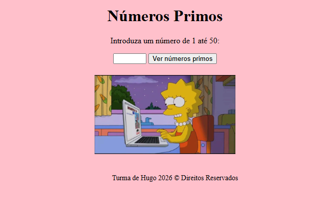
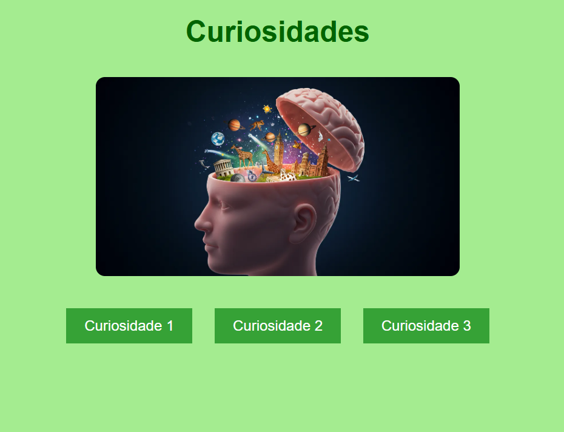
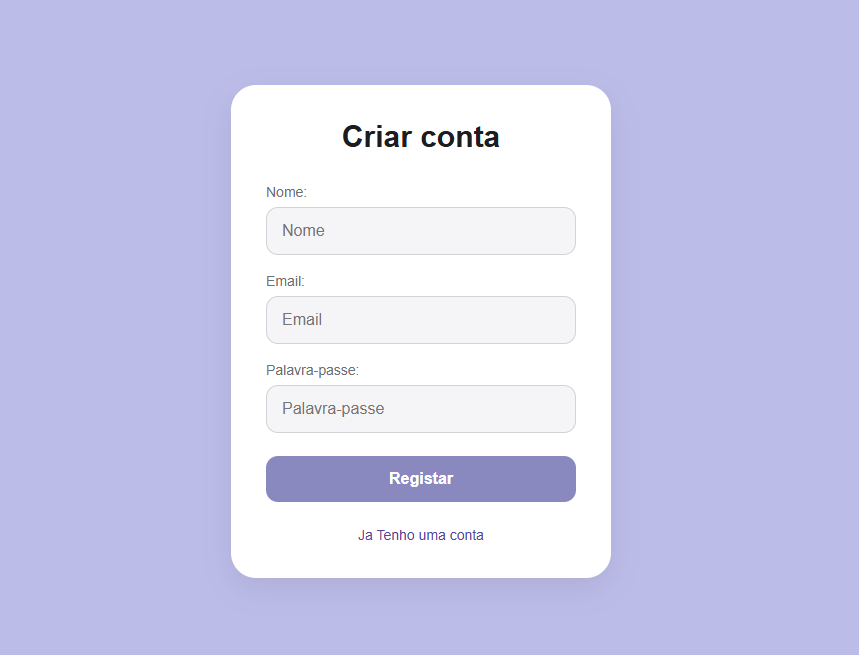
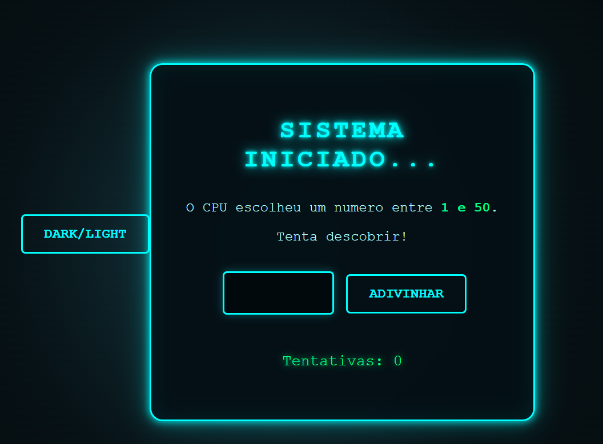

Projeto 1
- Input numérico. Ler e validar o input.
- Ciclo (loop).
- Guardar/mostrar resultados.
- Botão para disparar o cálculo.
Frontend Developer
<html>
<head>
<title> Sobre mim </title>
</head>
<body>
<h1>
Sou formanda do Curso Técnico Especialista em Tecnologias e Programação de Sistemas
de Informação.Os meus primeiros passos nesta área começaram em 2020, na Universidade
Tecnológica Nacional de Córdoba.
</h1>
<h2>
Gosto de ver desporto e, de vez em quando, de ler um livro.
</h2>
</body>
</html>
Desenvolvimento Frontend utilizando HTML, CSS e JavaScript para a criação de websites modernos, responsivos e intuitivos. Conhecimentos de Python como complemento ao desenvolvimento e à lógica de programação.
Exercícios desenvolvidos durante as aulas, demonstrando a aplicação prática de HTML, CSS, JavaScript e Python, assim como a utilização de ferramentas de desenvolvimento e controlo de versões, nomeadamente GitHub e Visual Studio Code (VS Code).
Estou disponível para novas oportunidades. Se tiveres alguma pergunta, um projeto em mente ou se quiseres colaborar, não hesite em entrar em contacto.
Alguns dos projetos e exercícios realizados durante a formação.




> Installing modules...
> Installation Complete ✓